Unless noted otherwise, every result above uses trans = "no-transpose". trans = "transpose" reads A with a cross-thread lda-strided mirror pattern instead of a coalesced one, and the gap grows with n — collapsed below by default, expand a trans value to see its table and chart.
trans.strmv.c — CUDA / cuBLAS trans-sweep reference script
Lda sweep
Unless noted otherwise, every result above uses a tight lda (no padding). Padding the row stride only matters for trans = "transpose" here (swept at both trans values below so that's visible in the data, not just claimed). Collapsed below by default — expand a trans value, then a pad, to see its table and chart.
Benchmark results for strmv on Nvidia Geforce Gtx 1650.
Nvidia Geforce Gtx 1650 — wgblas vs cuBLAS
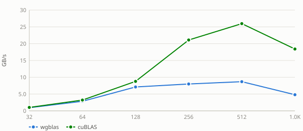
See also
Transpose sweep
Unless noted otherwise, every result above uses
trans = "no-transpose".trans = "transpose"reads A with a cross-threadlda-strided mirror pattern instead of a coalesced one, and the gap grows withn— collapsed below by default, expand atransvalue to see its table and chart.Nvidia Geforce Gtx 1650 — trans = no-transpose
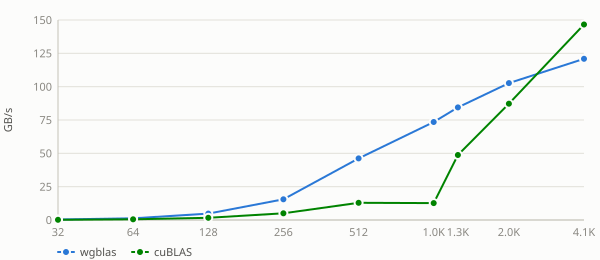
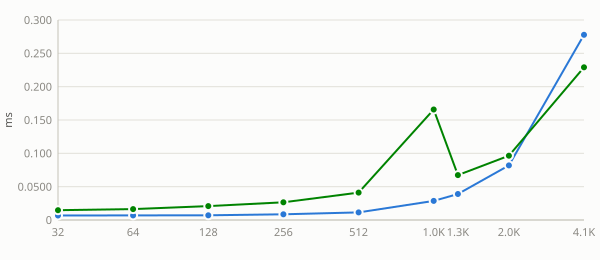
Nvidia Geforce Gtx 1650 — trans = transpose
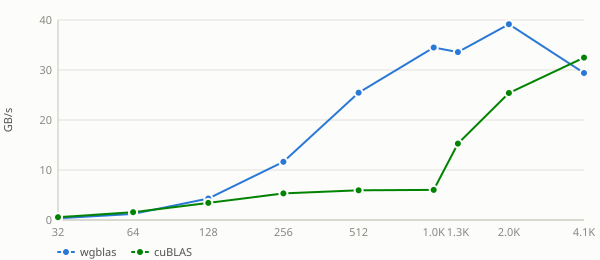
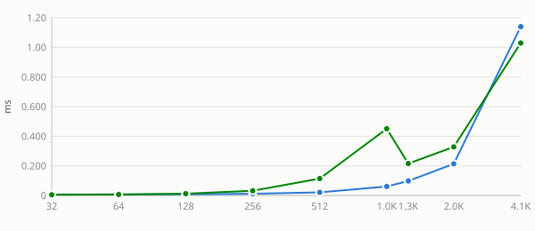
See also:
Lda sweep
Unless noted otherwise, every result above uses a tight
lda(no padding). Padding the row stride only matters fortrans = "transpose"here (swept at bothtransvalues below so that's visible in the data, not just claimed). Collapsed below by default — expand atransvalue, then apad, to see its table and chart.Nvidia Geforce Gtx 1650 — trans = no-transpose (8 pads)
pad = 0
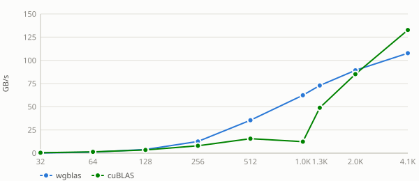
pad = 1
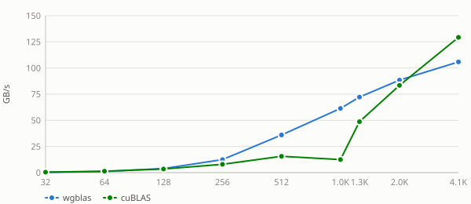
pad = 8
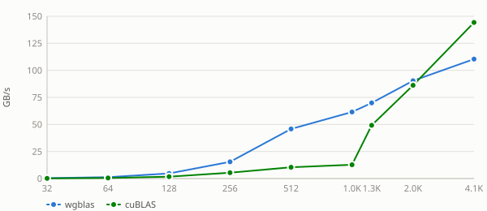
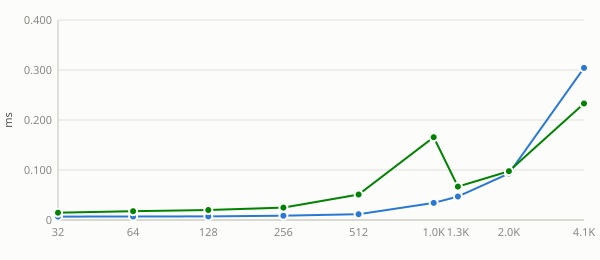
pad = 16
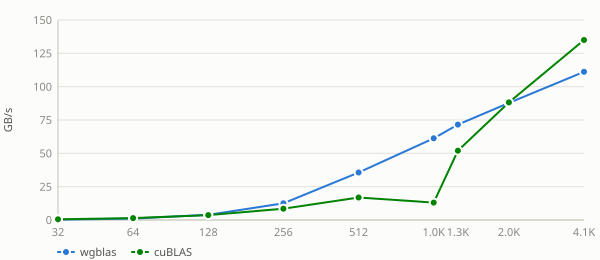
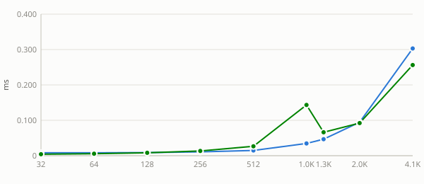
pad = 32
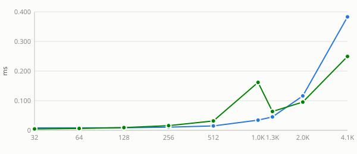
pad = 48
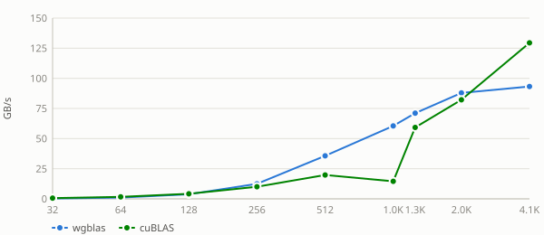
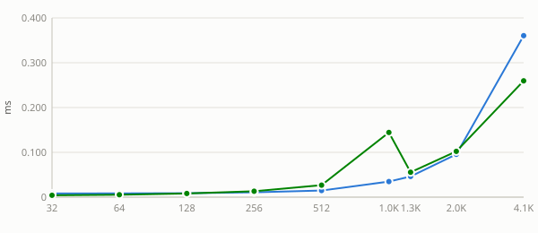
pad = 64
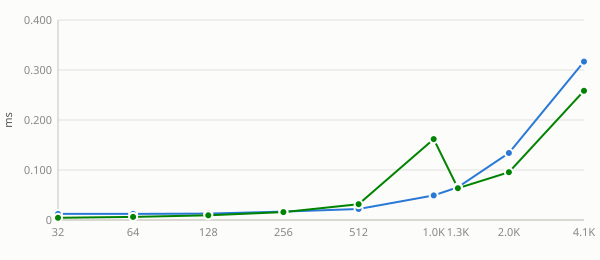
pad = 128
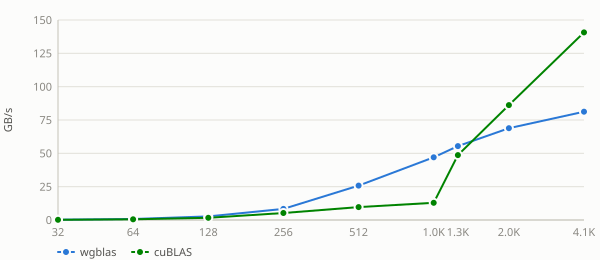
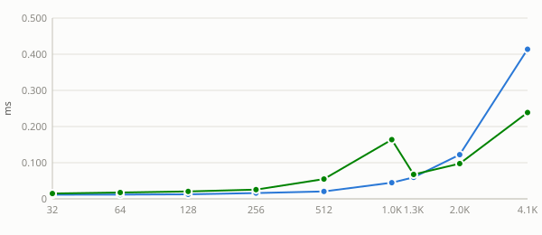
Nvidia Geforce Gtx 1650 — trans = transpose (8 pads)
pad = 0
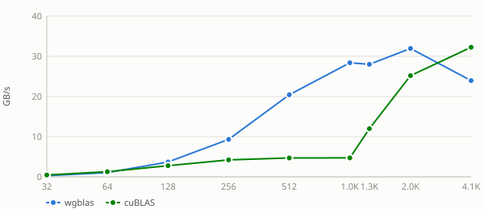
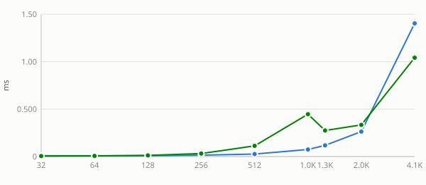
pad = 1
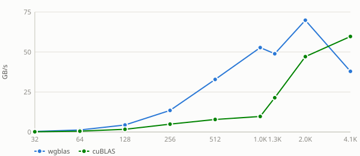
pad = 8
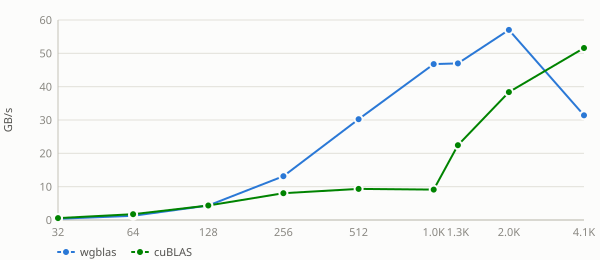
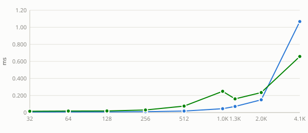
pad = 16
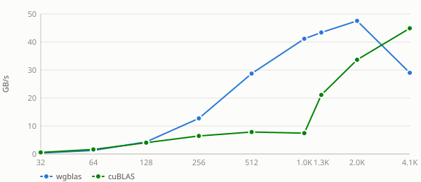
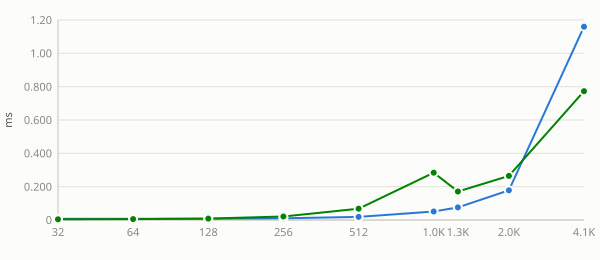
pad = 32
pad = 48
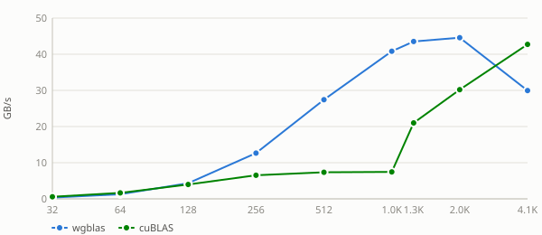
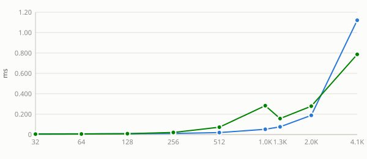
pad = 64
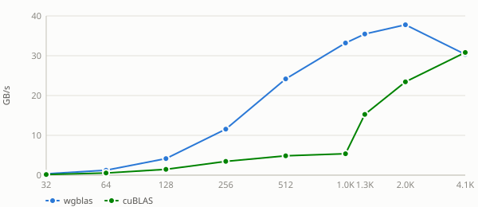
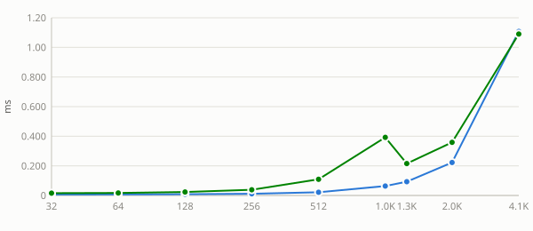
pad = 128
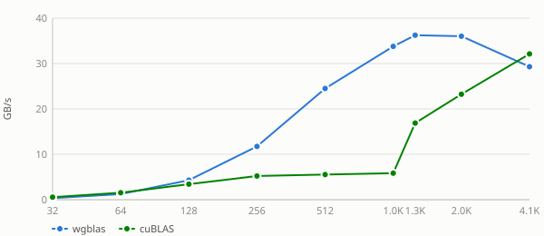
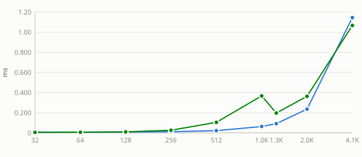
See also: